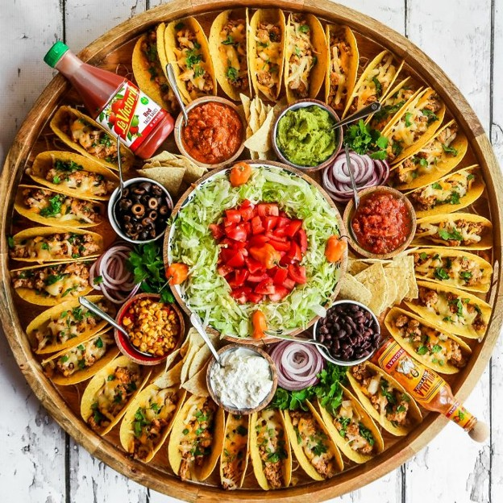
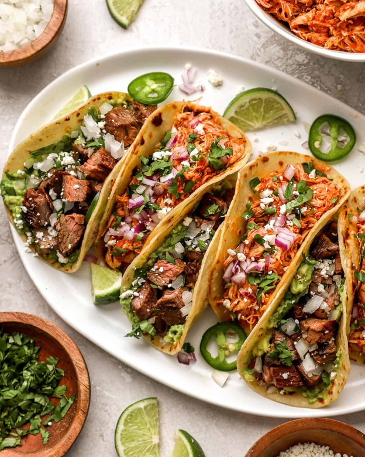
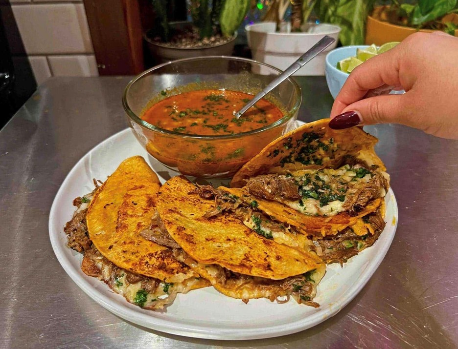
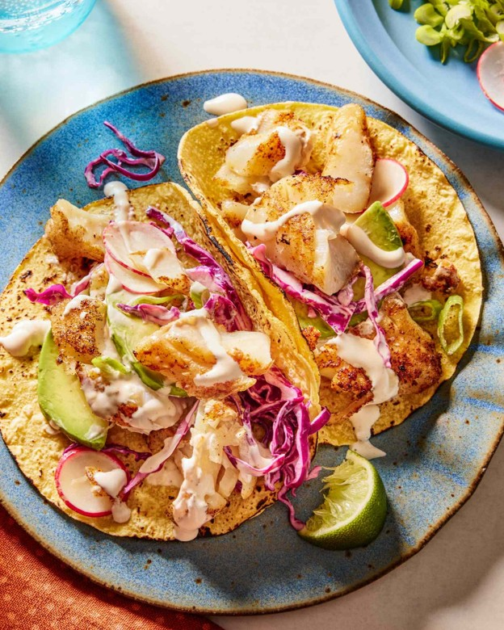
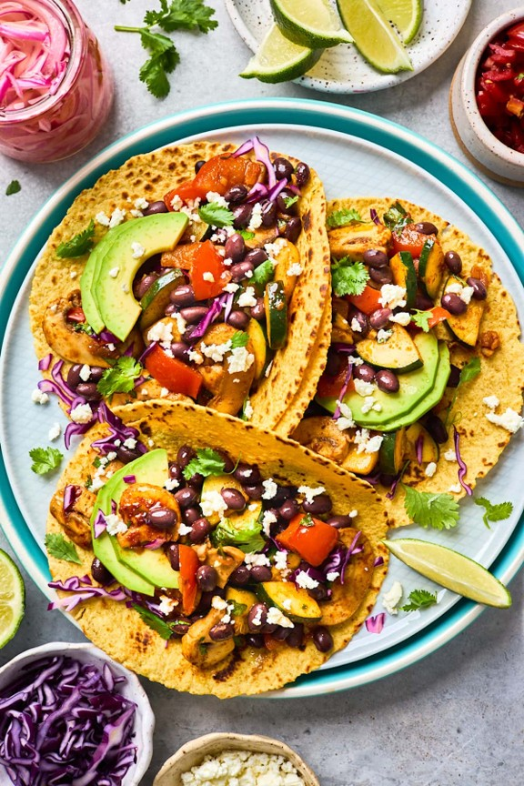

Are you searching for the greatest tacos of all time? Have you the desire to up your knowledge of tacos and consume some of the greatest foods of all time? This page is here to teach you about some of the specific tacos there are in the industry and allow you to explore some restaurants and receive and leave some reviews.




